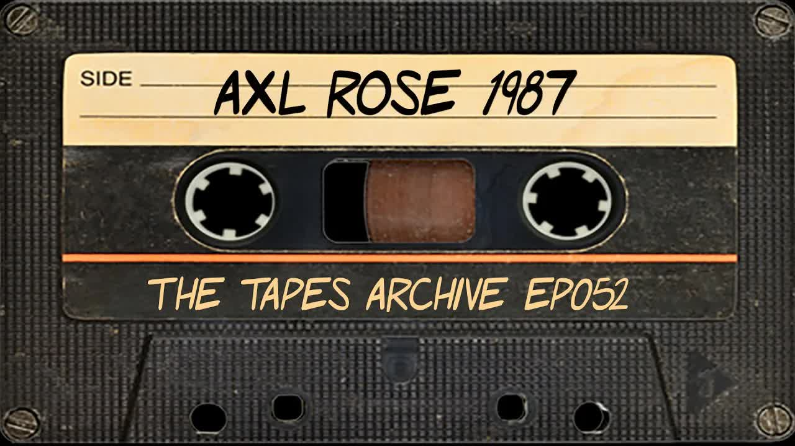

Great Pods
Axl Rose (Gun N' Roses) 1987 Interview | The Tapes Archive podcast
Key Points
Axl Rose was 25 years old at the time of this 1987 interview, promoting an upcoming Japan tour
Appetite for Destruction hadn't cracked the top 50 albums yet and the band wouldn't take off for another 7 months
Rose grew up in Indiana in a conservative environment where people were judgmental about musical tastes
He was kicked out of home at 16 for refusing to cut his hair, but later rebuilt his relationship with his father
The British press falsely reported Rose as a "poodle murderer" based on a misunderstood comment about disliking poodles
Guns N' Roses found great success in England, starting at the Marquee and moving to Hammersmith Odeon quickly
The band recorded Appetite for Destruction live in the studio with drums, rhythm guitar and bass in the same room for energy
They had difficulty finding a producer because many 70s producers had changed styles, burned out, or were considered unreliable
Rose had very strong artistic convictions and refused to compromise his music for commercial success
The band was frustrated by limited radio and video play, with only 4 songs containing obscenities out of 12 tracks
Rose criticized radio stations for being driven by advertising dollars rather than artistic merit
He called Whitesnake "the biggest sellout" for making mellow versions of songs for radio play
The band toured extensively with Mötley Crüe and Alice Cooper to gain experience quickly
Rose spent most of his time preparing for shows and couldn't party like other band members due to vocal demands
The album was charting between 50-60 despite limited airplay, which Rose considered good for a new band
Rose believed in doing multiple short tours with different bands rather than one long tour to gain varied experience
He considered Queen II one of the best recorded albums in rock history alongside The Wall and Physical Graffiti
Rose expressed excitement about the upcoming Japan shows, calling it a 13-year dream to play there
Full Transcript
Language: en welcome back to the tapes archive where we release rare interviews that need to be heard in this episode we have guns n roses front man axel rose at the time of this interview in 1987 rose was 25 years old and was promoting an upcoming tour of japan appetite for destruction hadn't even cracked the top selling 50 albums and it would be at least another seven months before the ban really took off in the interview rose talks about growing up in indiana the making of appetite for destruction whether he murdered a dog and which band is the biggest sellout the interview is conducted by steve harris to learn more about steve who is new to the tapes archive team please check out our podcast only interview with them which is out now thanks for tuning in and now it's time to open the vault yes i'd like room 207 please yes one moment okay hello uh hello uh my name is steve harris i'm calling from japan yes what's happening guy oh hi axel hold on let me get a cigarette okay what's happening we were kind of a little bit worried that you know in the middle of your big victory return there you'd be out partying instead of waiting at the hotel for the phone call no i'm setting up the party to come over to me right i just got in yesterday because i went i'm from indiana and i had been there in about two or three years and i went back to visit my family and my friends why did you decide to fit that right in before the homecoming there well just because it was like i hadn't been back in two years and the last time i was back there i just told myself i'm not coming back until i get a record out because too many people keep trying to say oh you'll never get anywhere crap like that i finally said okay i got three days i can go back and just see what it's like it was great and you always been known as the town rock and roller back then a bit yeah a bit but you have to remember that in indiana people are real opinionated and biased and things like that so i have a real open mind and i listen to a lot of material by listening to a lot of material you listen to rolling stones within your bag people think like that back there you know call you all kinds of different names depending on what you listen to and since i listened to everything i was called everything in the book all at things were still that way when you even when you were growing up you're not that like uh 25 i'll be 26 in february it's only even 10 years ago people were still thinking like that huh oh yeah well indiana is really closed off from the rest of the world maybe not chicago so much but even chicago a bit you know isn't it's a huge city but it's not like l.a or new york or in texas or florida the midwest likes to just keep itself to itself and everybody else has a problem that's how they look at it you know it's like they don't venture out to the world where people from texas they go to la or they go to new york on vacations and stuff but it's not like that a whole lot in the midwest people don't get out too much well what do you have to listen to to be considered normal there well it used to be leonard skynyrd aerosmith which i was amazed at aerosmith because tyler wore makeup but for some reason it was okay for tyler but not okay for nick it's kind of weird but like it was a certain group of kids you know a certain group of people and that they grew in numbers and they had a big influence on me you think the best sort of conservatism led you in the direction you were to go in with a sort of a backlash yeah but i've drawn from the conservatism itself i've found places where i can could be considered a conservative i've i've drawn from both sides i always work at trying to put things back together what i say back together is people will have an opinion and so immediately before they've even met they're not together when i say back together means like we could be friends you know like maybe in five years we can work it out and be able to understand each other so i always talked with some guys that i've every year of school with we didn't really understand each other until this time and they weren't just being talking because i was a rock rocker they were talking to me because they finally had some respect for me and they were going well he's not full of crap because so many kids back there talk about being advanced they talk about getting out there but it's on top it's all time it's all wishes and pipe dreams and things no one goes out and really puts their balls on the line why is that scared it's easy to live at home in indiana with your parents and you know work at your parents job it's what everybody else does for you when did the big break coming when did you decide that you were gonna bust out of the mold well when i got kicked out when i got told to leave got told cut your hair and i said uh no he said go i said i'm leaving that was like when i was 16 but now my dad is one of my closest friends i have it's taken us 10 years to build up that kind of relationship again but we've worked out a little by little and it didn't start happening just of my parents did just happen this year it's been coming back together over the last five years well you're being his son he must surely understand your rebellious spirit because i'm sure that exists in him as yeah i was telling a friend just recently that still has hard feelings against my father i was telling him i was going yeah well one reason dad was so hard on me was because he didn't know that i was following the things he taught me to do to go for your dreams and things he thought i was messing up he didn't know my dog i haven't seen in four months the famous dog they say i go murdering i don't want to break up a tearful reunion they said you were murdering your dog in england now he remembers now he's jumping around losing his mind okay so what's happening yeah you were talking about how they said you murdered your dog in england what's the story behind that i don't like poodles and i told some guy that everything about poodles makes me want to kill him so next thing you know there's this magazine in england talks about this band in l.a where this guy's a self-confessed poodle murderer so then they have like the national enquirer type papers over there and all those things came out calling me a dog butcherer that were busier than the beastie boys is that rather representative of the type of treatment you received by the british press oh well it worked out good and bad you know but it was kind of fun as long as but now you know there's things in magazines here hit parader where they now they've they got quotes of slash saying i run over dogs and he never said that yeah tork is like i i found out weird i had this little dog right and i got him when he was just really really little my father was explaining how he imprinted off me you know because he never imprinted off other dogs and things so he thinks he's a person and and all the rockers like like him it's funny that everybody hates little dogs but this dog is like a party dog it's funny he's your spud's mackenzie girl and has had yeah that's a big why getting back to england here your your success there was rather phenomenal as a matter of fact among uh the current wave of l.a bands that perhaps you stand out as the most successful band in england having been i guess you started the marquee and went to hammersmith odium rather quickly what's behind the success there what do you think is making you go over in england whereas they turn a cold shoulder to everybody else from l.a well you know i think it's kind of like if you think back in the 70s and stuff a lot of like henry's went over to england to break and a lot of real blues bands hard rocking blues fans have gone to england to break or been from england and it's like they were glad to see it back because they think a lot of things are pretentious they're not into a lot of the new bands they like them they're okay because that's that's what there is out there but they think it's a lot protected they think it's real pretentious and they thought we were the same way but then we went over there and showed we weren't and they liked that and they just started catching on was the crowd reaction quite a bit different from in the states in the states like we hadn't toured in the states so we'd only been in la there and l.a crowds have seen everything because they go to the shows every weekend or every almost every night and so they don't get as rowdy over here at least in l.a so much and lisa in the club scene now that we're doing bigger places then you get a lot of people that never seen you before and they're a rowdy but the rock crowd i mean they were around when molly crew and wasp were starting they've seen everything it doesn't bother you that they don't get as rowdy if they're there they like it the the reactions in england were different compared to the places we played the one place bristol colton hall was full of slammers and stage divers and people jumping off the balconies jumping off amplifiers we did a show in manchester the people just stood there they all stood up the whole time right and some of them they sang the songs and stuff but not as much as other places we were having so much problem with feedback on stage i didn't know that the people in the crowd weren't hearing it through the main pa it was just our monitor system and so we came back and did one song on corn we left we went up to our realm didn't think they liked us right well then about 15 minutes later they started screaming we didn't know it because we were like three stories up in this room security was keeping everybody away from us and then the reviews from the show were the world's greatest band you know it was very surprising we thought they hated us but basically they were kind of mesmerized they didn't know how to react with that experience under your belt now uh do you think you'd approach like say a future world tour differently i mean what did you learn from the experience gained a lot more confidence in working the stage and dealing with crowds and you know then we came back we did a club tour of new york playing new york was a lot like playing la you know we had to win those people over and then we went out with molly and that was pretty insane any night that we did two nights in a row the first night you know we'd get them going but if we did two nights in a row when we came back for the second night they were like whoa now we know who these guys are the first time people see us a lot of times unless they really hurt us and really into us they're more into watching and checking us out you know and watching every little thing like by this time you do a second night they'd lose their minds they were like yeah now i can let myself go it's cool to act like i like these guys we're really into being very real it's not an act it's not like a skit we put together the night before because we think the kids will like it it's something we want to do we don't quite pre-plan things except kind of the song list and i always kind of play that by how the crowd is going what song i'm going to do in a row kind of sometimes i'll change it completely right now we're using fred cory from cinderella because our drummer has a broken hand and so him and fred are really good friends and fred flew in and fred knows all the songs because he has time off right now and so the other night when we were playing with alice cooper i met fred play two songs he'd never played before at all in his life live how did that work out he did great i told the crowd i go not bad for guys never played this song before and they went screaming well it sounds like your shows are quite a workout for you guys as well you find it's rather draining oh well yeah i mean it's like but i spend most of my time just making sure i'm ready to go on stage how do you stay fit for the show i get lots of rest i drink lots of water for me personally it's like i'd like to party as much as the other guys but they don't have to worry about if they're able to sing they can get up and play their guitar even if they got trash tonight before or the next day doesn't hurt my energy so much in running around but what attacks me first isn't my voice i can't really go party unless i know i have a few days off you said that this tour of england was basically the first one outside of l.a you think you you're ready for the long haul though oh yeah yeah we came back from england and we did the cold thing before we went back to england for a month and a half with the coal through canada and then down the west coast and then over to louisiana you the southwest and then we did uh england we came back and we did clubs for two weeks on the east coast and then we went with molly for a month and then we went for alice cooper for two weeks now we've had like three four days off and we'll be doing these four shows here and then we have a new year's eve party that we have to play and then we're doing a show on the fifth and in the meantime we'll be in the rehearsal series the whole time then we're going back with marley for two weeks in europe then we're trying to another band to go with in the spring what i like a lot is the fact that we're going out doing all kinds of different things rather than just sitting and waiting or rather than going out with a big long year tour with one band or with two bands this way we get all these different experiences in one year by next summer we'll be like a veteran touring band that's been touring for like five years we learn real quick okay it's better to have this kind of oxygen mask it's better to have this kind of guitar stand it's better to have this things to make it run smoother yeah you guys are working at a at a remarkable pace right now who's responsible for uh putting the schedule together so tightly we work with a guy named bill elson and his secretary shelly saw it's our agency and then our manager alan niven and our drive because we do not like to sit on our ass because then we just get into drugs and because we get so bored so this keeps us moving these people are pretty much experienced i guess in the field they know how to set up a up-and-coming ban and put you on the right course yeah and also we have an idea of what we want to do and what would be good for us too we have full say so and all that who will tour with so we won't tour with you know there's been people we've turned down already which i won't get into yeah have you had like any say mentors or people you want aspire to become like well there was people that were our favorite bands i figured touring with molly crew would be a great learning experience that would be exciting opening for alice cooper it's funny we'd leave alice cooper on stage and go back go backstage and get our showers and have an old alice cooper taped in in the playing not because we're on tour with house coopers because it's stuff we listen to then i go wait a minute man we shut the tape off we'll go out and watch it live the first time in our lives it's kind of funny that you mentioned motley crew because actually the magazine i'm doing this interview for one of the reasons they wanted to do this interview is so they could sort of clear up a misunderstanding here you seem to be compared a lot to bands like motley crew however this guy from the magazine who put together the questions here he seems to think that there's a little something deeper going on in this kind of the showbiz flash of motley crew is that a valid opportunity they have a more theatrical thing which for its own aspects and the way it's done they work very hard at it and i have to respect those things they have their own beliefs and way of doing things if they're motley crew we're guns and roses you know we have our own way of looking at things and things we will and won't do they have their things like they do a planned show almost every note we don't do that it's not it's something we don't believe in but then again i'm not going to say it's bad just because they do it it's easy for a band to say oh what they do sucks about another bat but then when you're out there touring with them and seeing all the work that they put in it and how professional they are and how much they care and love what they do but you guys basically aren't into any sort of posturing or creating images that don't really reflect your uh your actual lifestyles not at all it's us people go oh actually why isn't your hair up well i can't do my own hair worth the crap but i can't afford to have someone sitting there doing my hair every day plus maybe i'd like to keep my hair and if i did it every day maybe it'll fall out and i don't want that tap so it's like if i feel like putting my hair up i do it if i don't work my the album appetite for destruction seem to be pretty much straight ahead guns and roses no flashy producer or no artifice by computer or trickery or anything what exactly did you have in mind was this sort of a live approach it was done live the drums the rhythm guitar and the bass are all live in the same room so there's bleeding of the instruments into each other's mics and things like that just to get the most energy and a good life feel to this arm it was very hard to find someone to produce the record because some of the main producers of our favorite materials 70s have changed their styles their approach or burned out or people that the record industry won't work with anymore you know because they don't know what they're doing anymore they've got 200 drugs or something so it took us a long time to find you know mike plank and mike clink it's like we worked with him and it's basically kind of like a co-produced album we got him for a lower amount of money and then he in turn gave us full freedom to do whatever we wanted which worked really good for us he trusted me a lot in the studio you know with all the vocal i did because most of the harmonies and stuff i came up with making it so easy and paradise i came up with the night i was recording those parts because i'd never had the opportunity to work on it before you had these ideas just brewing in your mind and then when you tried them in the studio you found they worked you didn't come come up against any brick walls or anything huh in some places you had ideas burning in your in other places you didn't know what to do in that part but you heard this part and then right when you heard it you thought yeah and this part of working there too and what if i did this now i'll try this one and see if that works and a lot of times you had things that worked sometimes you had things that didn't you just decide what was best at the moment what felt right what sounded good take a tape home and listen to it that night the next day decided if you're going to keep it or not it was real exciting creating experience if you could go back again you think you'd change anything at all no the only thing i would like to do is uh i wish we would have more time to mix but we were working on a release date there was a couple songs i didn't feel we had enough time to get just right paradise city i think could have been a little clearer but we were mixing two songs today to make a release date there was all kinds of reasons why we had to make that release date like getting the record out before england sets nerves in the month of august and things like that it was all kinds of reasons why we had a certain amount of time that we had to get it done so we just did the best we could in that amount of time we didn't really compromise we still i think hit pretty close to the mark we were wanting to hit there isn't really anything i'd want to change i mean there's two words i think in that whole record that i didn't quite say the way i wanted to and i forgot which ones they were didn't have time to go back and find them to redo them they're not out of keys so they don't no one else knows it i'm the only one who personally knows it in retrospect actually i guess the fact that you were under the gun was a sort of a blessing in the skies yeah in some ways it was yeah definitely you talked about having certain producers in mind the ones that you like from the 70s who exactly were you referring to i can say that i don't anybody that i'm naming i don't know that they will burn out or whatever okay because i've never met any of these people well first off you get interested in my lag but he wants a million dollars you know and he's busy anyway roy thomas baker is supposed to be just kind of a i'm really looking forward to meeting him because of that the guy who did uh did all the earlier awesome stuff that name's escaping me right now but that guy wasn't was one of them there were different people it was just it's hard to find people you'd come up with a name on a record the name that get tossed out with the first time after discussion or something we flew in manny from nazareth he was a very great guy and we loved nazareth but he was kind of like in a different sphere than us at the time so it didn't quite work it wasn't like a bad problem it was just like it just didn't quite feel right you know we talked with post family for about five minutes and he wanted to rewrite jungle and something else so that was the end of the conversation here and now he's going around saying he was going to produce the record but these guys are too crazy this and that no there was no chance of him producing we talked to him once we did some stuff with spencer proper who did the second wasp tape where that tape sounds really bold and powerful and he made our material sound really weak and so we just kind of shine now too where our ep was recorded in his studio it seems like you had a pretty concrete idea what you wanted to commit the vinyl then which is oh yeah oh yeah i mean i've been in all kinds of different bands in l.a some of them exist now where we've been going to go into the studio and then right there and then i quit because i wouldn't allow myself to be on record and have it come out that way yeah i have a real strong idea of what i wanted to show people musically i've never let up on it just for the sake of getting successful or having a place to sleep you can hear it so easily this is a crazy song yeah it is but it's also hard to me i have a wide spectrum of art a beautiful ballad with full symphony where someone would call art it's just as much artist it's so easy and i believe in art first do you know of any bands that you think have been like held back because you know they're really good bands but they're being uh rather limited on vinyl it's hard to say sometimes because it depends on who's doing the limiting is the band allowing someone to tell them what to do okay well they know you could go well in their contract and said they had to do well then who was we they're the ones that signed the contract that was limiting them sometimes people talk about money success as being the success i that's second that's being lucky and the people are being generous to you by buying your that's successful on its own terms the success to me is like you do a painting and did you get it might not have been what you wanted because when you think of a painting in your mind sometimes what comes out on the pain is like the shadow of what you thought of but still is it something that you're proud of if you can get that and you're really proud of it no matter what anybody says whether someone offers you a dollar or ten thousand dollars for that painting if you're proud of it that's to me what counts that's what we strive for being extremely particular about your own sound and whatnot i'm sure it's rather vexing to always be mentioned in the same breath such as poison or faster pussycat which all seem to be part of the la blood of glam bands yeah it is it just really gets on your really good for your nerves footage faster pussycat doesn't bother me so much because we've done everything we can to help those guys just enough similar in thinking in the same wavelength that it was good to have someone else there and not be all alone but in the actual approach and doing what we want to do everybody in this band is in this band because he wants to be in this band and around these guys because he wants to be signed being famous is second and i can say that for all the guys in the band i don't know where our heads ought to be in a few years maybe somebody you know getting a real big uh coke scam or something and really need ten thousand dollars so he doesn't care what he pays as long as he gets that money to pay off that debt that could happen i don't know do you think it's easy to get caught in that kind of nonsense in the music business oh yeah oh yeah well people get their standards of how they want to live and so they're willing to do anything to keep up those standards i'm not so much that way not about everything especially not about my art how many years have you been knocking around l.a before you really felt that you had the lineup you needed i've been out here off and on since 80 and then i was in here straight from 81. so it took up until the last two and a half years to finally get to solomon right now but we kept opening into each other you just sort of knew when the right guys got together that was gonna work out or did you have to polish it up after you well we finally that we were the right guys and then we said okay and now you know let's just stick it out together and let's start working so we all like finding new songs and being able to be proud of our songs going wow i've always wanted to write a like that i've always wanted to write a song like it's so easy so you know finally having that song was great we're always looking for new types of material that we've always wanted to play songs that make us feel certain ways that we've always wanted to feel what we play us on how has the chart actually been for the album excuse my ignorance no it's been going up and down between 60 and 50 for the last month and a half it's doing okay with very limited radio play and limited video play so for that it's doing great especially since my new band no you know people don't really know who you are we're hoping to put out a video for sweet child and that should move things up a little more but the record's selling all right do you think you're being limited radio exposure and video explosion because you're a new band or does it have to do with the music as well i think it's part of it and the and the controversy around us i mean people think that every song in our record says the word [ __ ] four songs have obscenities in them four songs not twelve four and we're not asking them to play those four i'm saying pick one of the others also that you know we have loud guitars real guitars real drums it's uh guitar is not the same way on a lot of people's records as it is on ours it's thrown down in a different way or even if it is for for major ready to play real loud then the lyrics are something that's completely corny that has nothing to do with anything i mean look at okay i'll say a man that i don't care saying anything about bad europe that's not the most pretentious crap i've ever heard but people that are talented and they could be doing something a lot more with their lives if you ask me you can tell me every one of those guys is happy with what they're doing and i just don't believe it well then again uh you know i find the europeans have sort of a different approach to rock and roll than americans do so maybe they get off and that kind of stuff oh i don't know yeah i mean it it i think it's a scam to get success be rock stars maybe they're happy being rock stars but i don't think they're going to sit down in a year from now and go god i'm so proud of myself for writing that song or whatever or ninjas and stuff it's joe what do they know about me i suppose that even if your record had stiff i mean considering you're a new band it's done quite well uh from what you say about the the chart action there but what if it had stiff do you think you guys would be taking a different approach now no we just would have been a little bit scared about how we're going to survive i believe in myself and i believe in my songs and you know i think that we'll get there somewhere but it's like this it's like the album queen 2 wasn't a very successful album for queen in the states but i think it's the best recorded album in the history of rock and roll i think it's up there with the wall and physical graffiti and stuff like that so it comes down to an art thing i'm very very serious about doing something i believe in at least at the and if i've changed my opinion about something i said in a song well as time goes by that's okay because that song is a reflection of where i was then like it's so easy i keep going back to that song but it says i drink and drive everything's in sight well there was a time when we were a little bit careless and thought we were real cool and we got away with it it's not something we do now or at least try not to it's not something i would do gotta watch slash so good luck what i have to watch though what do you mean sometimes after after youtube meeting he'll try that during drive thing he's got to grab him last time we rented vans for this band he trashed both of them we have to sneak them back in the building to the band rental place and leave a note sorry if you look on our thank yous it says backstage van rental sorry i guess that's something you learn along the way is this basically a lifetime commitment you think as far as i see it like say we get into some type of material they won't play it anywhere no one else will buy it but it's where i'm at well the only thing that bothers me is i won't have the budget to record it as but at least have my past past records to be happy with and i can go somewhere you know be with that and go sell pot smuggle pot from have a gun and a harley and live in the and you know if i plan my cards right and pick a place to live just right once california sinks man i'll be a rich man with beachfront property i'm planning out my alternatives you've got it all mapped out trying to do you think you're kind of the spiritual head of the band there you sort of hold things together morally you think with a direction yeah with a direction and with my real strong beliefs and faith in what we do as artists yeah i'd say so have you ever had to like really argue with the guys to kind of get them to go in your own direction i'll give you an example about that and uh when we were practicing in a one-room studio and i was standing outside because there was no pa so i stood outside to listen real clearly in the parking lot and i heard night train and rocket clean and my michelle and stuff coming together for the first time in a rehearsal right and these guys were on that day they were they were on top of it i was like my eyes were like watering i had chills and i was like going we finally got the songs i've been looking for and izzy told me account rehearsal he goes because man now i see what the [ __ ] you've been talking about for the last three years it's hard to convince someone they don't know what they have is i'm real good at seeing a person's potential sometimes so much so that it causes me because i see the potential in this person and i put so much belief in them but they don't have the guts to dig for what i see inside of them you know so sometimes that's been problems but other times like izzy is always pushing him with socks because i knew it was there and now he's really glad i did and it worked out good for most of us so now we don't argue so much about material because of the fact that we now have everybody has a good respect for each other and those guys are you know those guys have a lot more respect from right directions and stuff so it works out pretty good we don't really fight about material we fight about things like all right who made all the phone calls and build them to my room you know that's what we thought about [ __ ] like that happening to each other or who came in my room while i was gone and raided my in-room bar and that could be any of us have done that to the other guys you know and then that person gets stuck with the bill in this stage of your career when are you the happiest i'm the happiest when i write something new i really want to or i don't know it depends on the show actually depending on how happy you are to show getting accepted in a new place not just because you're axel rose the new rising rock star or something but just because this person likes you and respects you now or you showed them something that makes you respect you that's nice i don't like pretentiousness i like meeting new friends it makes me real happy somebody that like i can learn from and they can learn from me a profitable relationship makes me really happy when you feel the most frust or angered being you know what you are that's when i'm getting limited by like a radio station that plays welcome to the jungle as a joke because i've got all these papers and everything sent on it they play it as a joke a top 40 station all sudden we're the number one request so then they decide definitely not to that makes me mad that frustrates me people are scared that they're going to open up a can of worms and what really frustrates me is the fact that [ __ ] radio is basically run by advertising dollars and we're talking money okay we're not talking art we're not talking music we're talking what kind of music can we play that we can get this guy to put his commercials on our radio station so we can make lots of money to be there then you have no business being in radio you know get the [ __ ] out go home if you want a job like that then we're gonna factor or something you know get the [ __ ] out of this and leave people that really care about their music alone because these people are screwing with my bank account when i'm being sincere i got some insincere [ __ ] worried about paying his rent so he's kissing ass playing madonna songs that he hates and he won't play guns and roses that he loves that guy's [ __ ] with my bank account i don't like wimps like that that makes me mad just for the record that's just because of the obscenity thing that he's avoiding the band no it's just it's hard rock man loud guitars man a lot of guitars should get in the way they think there's gonna be a younger audience so the younger audience is gonna buy the new jeep or this kind of microwave oven so those people don't want to put their ads on that radio station because it has too young of a listening audience and plus there's not a whole lot of hard rock and roll you got great you got some great metal bands some great ones out there you have some good middle of the road rock bands and stuff but you don't have a lot of hard rock and roll bands now that are talking and thinking about whatever they feel like and doing it musically well singing on key with harmonies and everything tight planned very well you don't have much of that right now we're one of the few in there you can't tell me the rolling stones are that way i mean they're supposedly broke up they were on their last record in some ways like one hit to the body and stuff but that still had a lot of special effects and things that's just different the new record that has all kinds of different things that has real heavily thought about commercial stuff and then it has some really against the grain stuff it's kind of both on that record so it makes it a very interesting record as a mark of the times for me i'm saying it's my favorite i'm not saying i don't like it i'm saying it's a very interesting record for where we're at the music but then again this you know this is 87 has been really the year of the crunch guitars you know white snake bon jovi cinderella uh i don't call what i don't call white snake crunch guitars i call white snake the biggest sellout i've heard in a very very long time is that right what makes me sell out i'm not knocking i don't know man i mean making a mellow version of your song to get chr radio play that's like so syrupy it'll make you sick maybe if that's the way you wrote the song it intended it that's nice but just doing it for the sake of getting money kind of makes me nauseous now i'm not talking about the players especially the players in the new band vivian campbell blows my mind on guitar i'm just saying i don't enjoy the record and david coverdale made a comment to someone i met in carolina saying that there wouldn't be bands like marley crew on guns and roses and stuff it wasn't for him and i'm sorry he hasn't influenced anything i've ever i like about two or three songs for the guys that's about it i think he's a great singer but i've never sat around singing david coverdale songs i think slide it in was a much more rocking record than the new it took a lot more chances let me put my tape up like you know how like we got our record deal and we got kevin to agree a lot of things we wanted we have to do it again and we have to do it with the whole world we've just come back out just like four and a half months of being on the road now okay and now we're gonna get ourselves together play for the hometown you know kick ass as hard as we can with that and then for the next couple weeks after that we're gonna go with all our lawyers record company and everything else and our management and our our counting things and we're going to go in and put it all back together again and see where we stand and what we got to do and move hard fast because all i know is this i don't know what's going to happen or how far we're going to get but by the end of 88 we're going to have as many things as we possibly [ __ ] could have because man once your record is done after that year of touring yeah it might stick around and whatever but it's not you didn't do it then man you ain't gonna get no [ __ ] second do you think you're just gonna have to take your music to the people via the stage because of the limitations to see well a lot but we're hoping the sweet child will have a chance to get through in a lot of ways you know we don't know i think it should i can see the hassles with jungle i can see the hassles with it so easy definitely i can see the hassles with paradise city because it's really long and the verses are a little bit too heavy for a lot of radio stations but i don't see a problem with sweet child and i didn't write sweet child to get it on radio but i don't see the problem with it doing that and if it doesn't do it then someone's just slamming the door on us that happens and we got to figure out another angle and who knows if we'll be able to do it next year or not we'll see i'm not going to not believe that we can't do it but anything's possible you know and if it doesn't happen then we're going to figure out another angle without compromising our because once we compromise our music there's no reason to be in this man get the [ __ ] out go home if i wanted to [ __ ] compromise i could have cut my hair and i could be a car salesman somewhere or i could be climbing a corporate ladder i'm not in this compromise not at all only compromises are when it's profitable for both people basically that's not a compromise that's finding out how to work together if someone's telling me i have to change the lyrics of the song to make it a hit that's not working together that's something that's none of their business silly question about semantics but do you object to the labeling of your music is heavy metal only because people see that word and they could get this limited idea and i think that we play all styles of music we just have loud guitar which that's the heavy metal label i don't see where a lot of heavy metal is is i don't consider acdc heavy metal i consider it as heavy as any metal out there but i don't consider it heavy metal i consider it extremely loud obnoxious blues rock and roll and that's what i consider us because that's our strongest base but that doesn't mean that we won't play a heavy metal song or we won't play a country song yeah i mean if i do a country song i'm still gonna i mean the rolling stones to me have done the best i'll find a girl with far away eyes far away eyes that to me that's the best country song ever written rory stones wrote whatever kind of music they felt like written they wrote misuse one of the best disco songs ever written basically we're just a rock and roll band playing whatever we feel it's interesting because you know a lot of the bands you've mentioned like the led zeppelins a queen rolling stones ac dc all the bands that kind of spawned the legacy that they're all still alive and when i first got the new queen record right the kind of magic it was out like last year so i heard one of the songs of it and i thought oh they sold out but i didn't listen to it closely i closed my mind because i was so used to their old material now it's one of my favorite records the vocals that he does on this i compared it to some of the old stuff the range is much higher and there's much harder techniques and things that it was amazing i'm glad to see that when i read about live aid some of the reviews like in karang where the queen just queen was it queen was the whole no one was as good this time as bad as his queen was you know that's very good for me to see how about of course the sole exception to that list of bands is led zeppelin he's moved on he hasn't compromised his art i'm talking about robert plant there he hasn't compromised his art he's moved on he's an older guy he doesn't know you know he doesn't agree with some of the things he wrote about before but like you go through life and you make changes i mean pete thompson isn't saying hope i die before i get old now you say things one day and that's how you really feel and you believe it but then maybe you grow past that and robert plant it's like i don't listen to a whole lot of the stuff but i have a lot of respect for it i really like the song big long but i have a lot of respect for it because he's being himself and he's not compromising and jimmy page is pretty much the same way sure you miss old leads up but like people go back to their high school reunions and they're standing there talking to some bald fat guy and then they don't even realize that was the quarterback of the football team and got all the girls they missed that but the guy is charged now he's a hat you know the guy could be a happy whatever family man in idaho or something now you go through changes i just don't like compromising that's just just for the sake of being successful that bothers me i'd rather start than have to pay the rent by bending over and take it in the ass and that's what i consider one last thing i want to ask you that i forgot to ask you before when we were talking about indiana is what do you think of john cougar mellencamp who stayed back of course one i like the fact that he has the balls to go back and live in indiana rather than live where all of the other people in the industry would think he's he's doing what he wants to do and he's being true to the people he grew up with that's real important to me because i have strong friends in indiana too i don't necessarily like the place because there's not a whole lot to do i like some of the scenery there's not a whole lot to do there though and i don't get along with the law there i get thrown in jail all the time and usually it's for something i didn't do so then i have to pay lawyer fees and if i get my way out of court that's happened more than that the album is the album called scarecrow or the last one uh i think there was there was one before that yeah that's a phenomenal record whether i'm totally into it you know it's whether where my head's at all the time there's different times i can sit down and hear one of those songs and go yeah there's other times when john cougar's the last thing i want to hear it's not like it's my very very favorite thing but he's a good artist i guess i got what i need to know then thanks a lot excellent you know let me say one more thing if this comes out before we get there man we're gonna tear that place up we are we are so excited me and izzy have been talking about going just paying for with me it hasn't been a good 13 years it's been a dream going to japan and playing the shows in japan i mean our favorite records were cheap trick of buddha khan and unleashed in the east if you hear these screaming japanese people we gotta go there we have to go hopefully we'll have the people be like that for us you know and we'll have fun with them and and i'm looking forward to all the sushi well i'm sure the kids will go empty because they we can find some opium dams and learn some some oriental girls can teach us some new things and american girls don't know that's right some exact new positions there to take back oriental basket trips well i'll i'll leave those arrangements to you once you get here all right all right well you can you know put in your thing you know that we are looking for these new things we need instruction oriented [Laughter] l.a rock and roller with hard on speaks oriental masses definitely that's how it is all right okay well thanks a lot for your time and sorry to take you away from your pooch no the hat's okay okay okay we'll see you when you get out here take care okay thanks a lot bye-bye hey thanks for listening to the tapes archive podcast please remember you can always find more information about the show and the individual episodes at our website thetapesarchive.com until next time the vault is closed
← All Summaries
Watch on YouTube